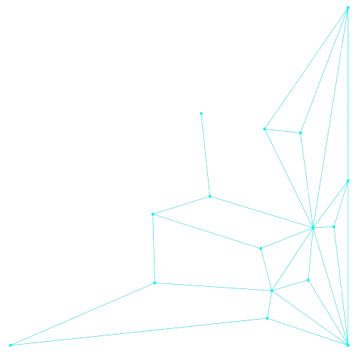
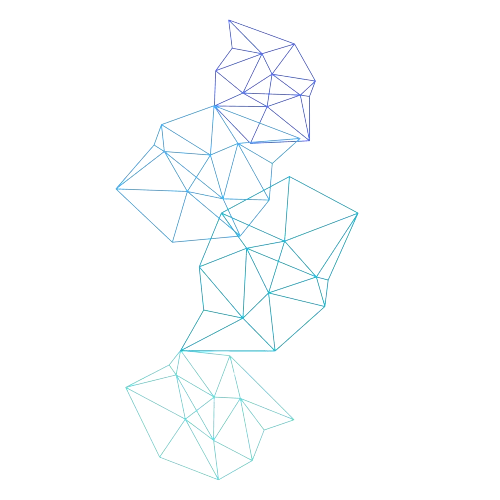
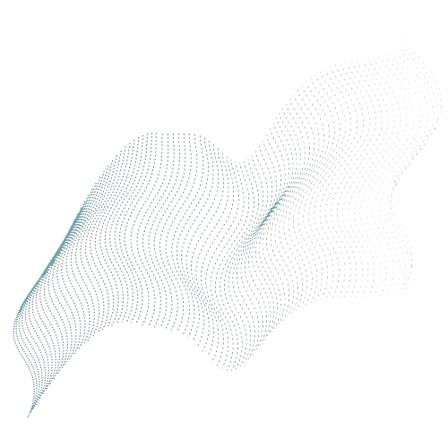
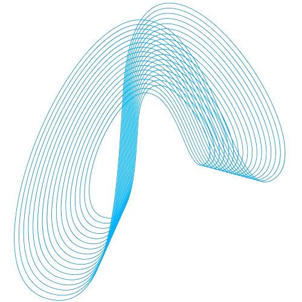
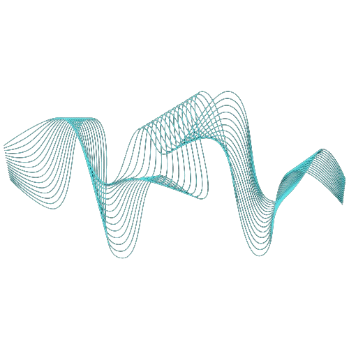
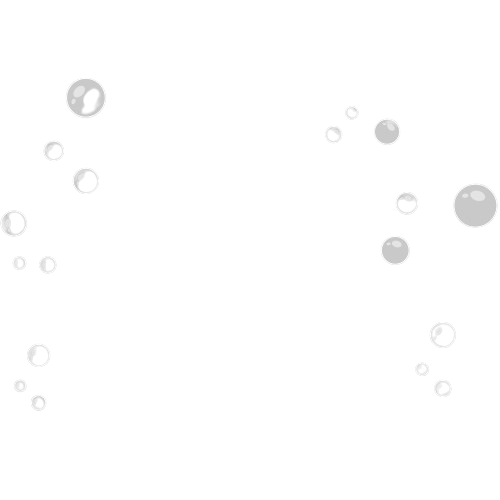
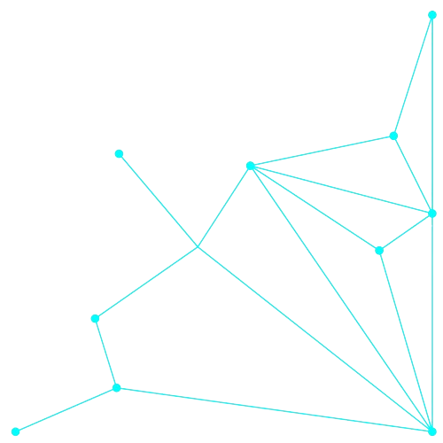
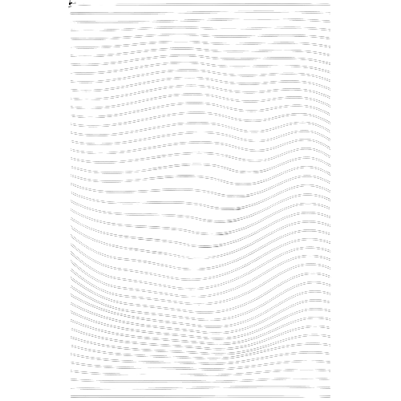
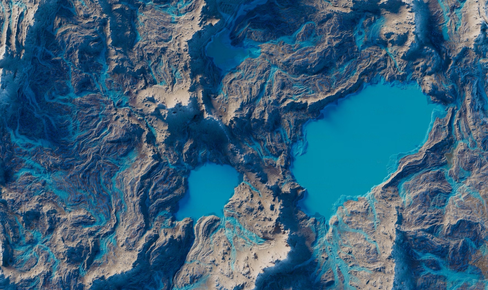

Transformando dados em decisões para


+




Protegendo os Oceanos
Nosso Dever e Obrigação
Os oceanos cobrem 71% da superfície da Terra e são essenciais para a vida no planeta. Eles regulam o clima, produzem 70% do oxigênio que respiramos, fornecem alimentos e medicamentos, e suportam atividades comerciais e recreativas. No entanto, nossos oceanos estão sob ameaça.
Impactos das Atividades Humanas
e das Mudanças Climáticas:
-
Aquecimento Global
Os oceanos absorvem 90% do excesso de calor da atmosfera e cerca de 2,9 bilhões de toneladas de CO2 anualmente. Mas essa capacidade está diminuindo devido ao aumento da temperatura e da acidez da água, afetando a vida marinha e os processos biológicos críticos.
-
Poluição Marinha
Plástico, esgoto e derramamento de petróleo são alguns dos principais poluentes que ameaçam a vida marinha e a saúde dos oceanos.
-
Poluição Marinha
Plástico, esgoto e derramamento de petróleo são alguns dos principais poluentes que ameaçam a vida marinha e a saúde dos oceanos.
-
Desmatamento
A destruição das florestas diminui a capacidade do planeta de absorver CO2, agravando o efeito estufa e contribuindo para a perda de biodiversidade.
-
Perda de Biodiversidade
A extinção de espécies devido à atividade humana e às mudanças climáticas reduz a resiliência dos ecossistemas e a disponibilidade de recursos naturais.
-
Urbanização
A expansão das cidades transforma habitats naturais em áreas urbanas, levando à fragmentação de ecossistemas e a alterações no clima local.

Planejamento Espacial Marítimo
PEM
Para enfrentar esses desafios, o Planejamento Espacial Marítimo (PEM) é crucial.
O PEM organiza o uso do espaço marinho de maneira sustentável, garantindo que as atividades humanas não comprometam a saúde dos ecossistemas marinhos.
Soluções Urgentes:
-

- Conservação de Habitats Críticos: Implementar políticas de conservação mais robustas para proteger habitats essenciais.
- Gestão Sustentável: Utilizar o PEM para equilibrar as necessidades humanas e a conservação dos oceanos.